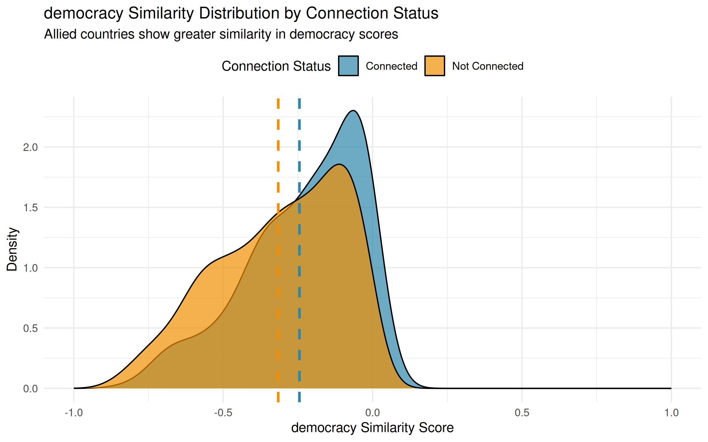
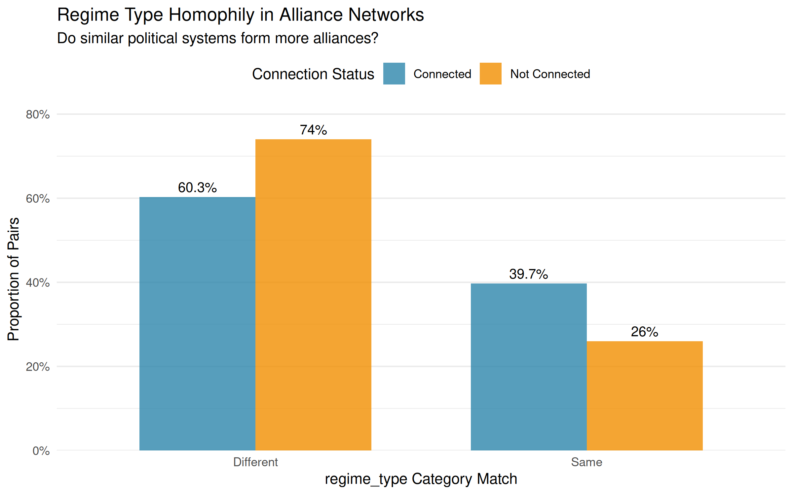
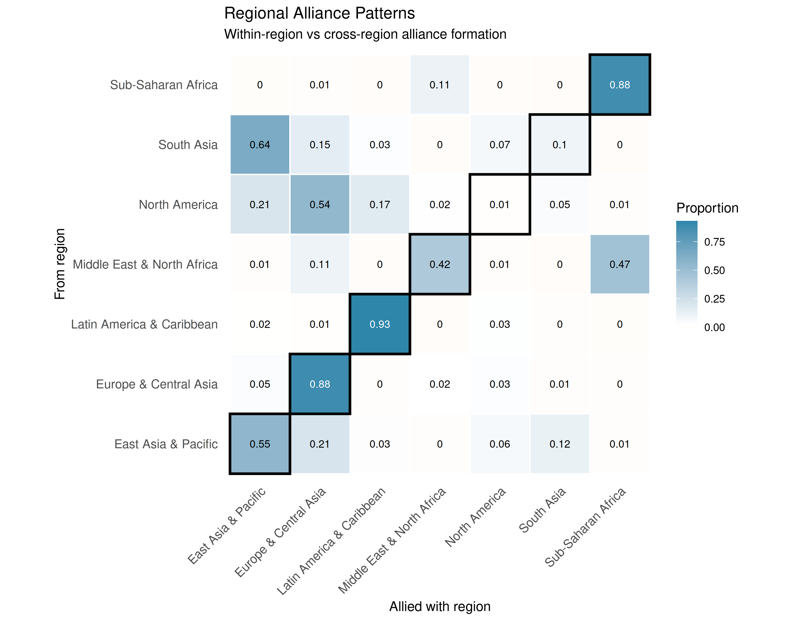
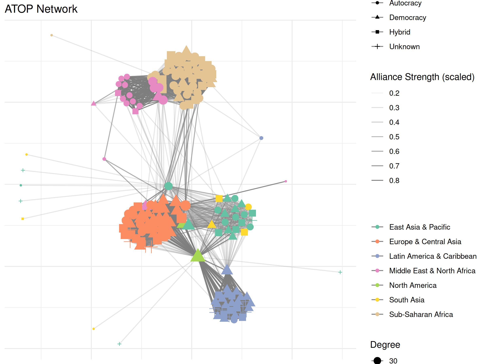
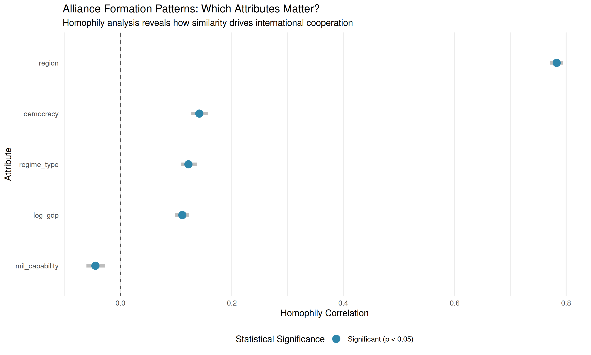
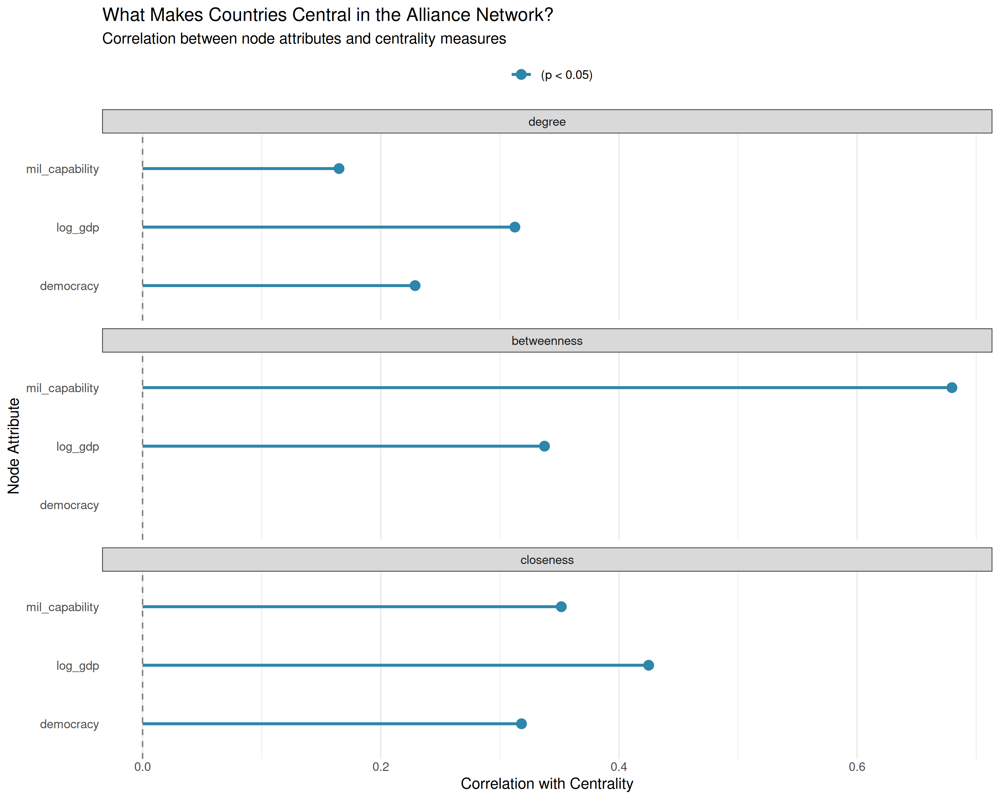
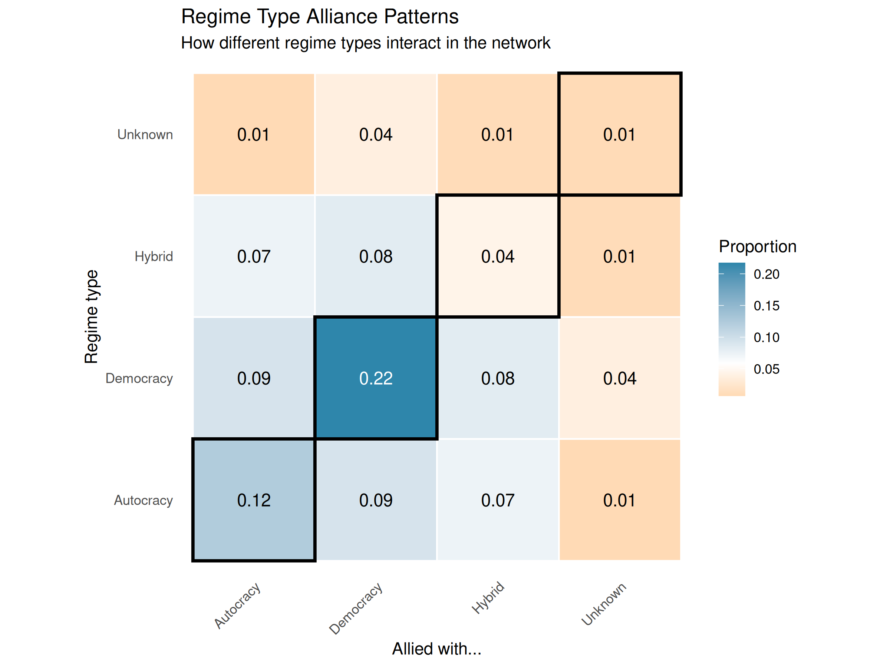
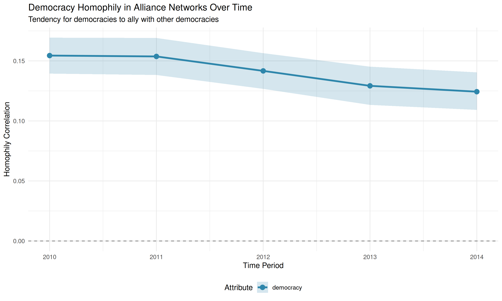
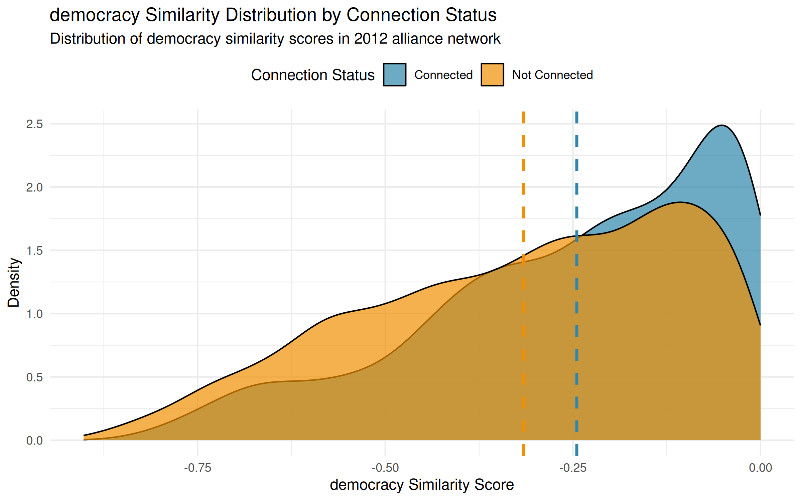

Measuring Who Connects with Whom: Homophily & Dyadic Analysis
Cassy Dorff and Shahryar Minhas
2026-05-27
Source:vignettes/attribute_analysis.Rmd
attribute_analysis.RmdVignette Summary
This vignette demonstrates how to play with netify to explore relationships between international alliance patterns and country characteristics using data from the Correlates of War (COW) project and Alliance Treaty Obligations and Provisions (ATOP) data. We’ll toy around with some simple international relations ideas:
- Democratic Peace: Do democracies cooperate more with each other than with non-democracies?
- Economic Interdependence: Do countries with similar economic development levels cooperate more?
- Geographic Proximity: Does geographic distance affect cooperation patterns?
- Regional Clustering: Do countries primarily cooperate within their own regions?
We’ll focus on how to do some exploratory statistical analysis with netify:
-
homophily(): Do Birds of a Feather Flock Together?- Tests whether similar countries tend to form alliances with each other. For example, do democracies primarily ally with other democracies? Do rich countries mainly partner with other rich countries?
- Calculates correlations between attribute similarity and network tie presence using multiple similarity metrics. Performs permutation-based significance testing to determine if observed homophily patterns exceed random chance.
- Function notes:
- Flexible similarity metrics: Correlation, euclidean, categorical, cosine and other methods
- Statistical rigor: Permutation tests with confidence intervals
- Smart missing data handling: Preserves maximum sample sizes
- Multi-network ready: Works across time periods and layers
-
mixing_matrix(): Who Actually Partners With Whom?- Creates detailed “who allies with whom” tables. Shows not just that democracies prefer democracies, but exactly how much they interact with autocracies, hybrid regimes, etc. Think of it as a cross-tabulation on steroids.
- Constructs mixing matrices showing tie distributions across attribute combinations. Calculates assortativity coefficients, modularity scores, and entropy measures to quantify mixing patterns with optional normalization schemes.
- Function notes:
- Cross-dimensional analysis: How regime types mix across regions (unique feature!)
-
Rich summary statistics: Assortativity, modularity,
entropy, diagonal proportions
- Flexible normalization: Raw counts, proportions, or row-normalized
- Weighted network support: Incorporates alliance strength, not just presence
-
dyad_correlation(): What Relationship Factors Drive Alliances?- Tests how characteristics of country pairs (like geographic distance, trade volume, or cultural similarity) predict whether they’ll form alliances. Answers questions like “Do nearby countries ally more often?”
- Correlates dyadic (pairwise) variables with network ties using multiple correlation methods. Supports partial correlation analysis to control for confounding dyadic factors while handling missing data through pairwise deletion.
- Function notes:
- Partial correlation support: Isolate specific effects while controlling for others
- Multiple correlation methods: Pearson, Spearman, Kendall with significance testing
- Binary network options: Analyze tie presence vs. strength separately
- Comprehensive diagnostics: Descriptive stats for all variables
-
attribute_report(): The Complete Picture in One Function- A kind of Swiss Army knife for understanding how country characteristics relate to alliance patterns. Automates running relevant analyses and tells you what makes countries influential, who allies with whom, and what drives partnership formation.
- Comprehensive wrapper combining homophily analysis, mixing matrices, dyadic correlations, and centrality-attribute relationships. Tries to automatically determine appropriate methods based on variable types.
Data Preparation
We’ll use the Correlates of War data via the
peacesciencer package to build a network of international
alliances. This data includes measures of democracy, economic
development, military capabilities, geographic relationships between
countries, and alliance commitments from the ATOP dataset.
COW data
# download peacesciencer external data if needed
peacesciencer::download_extdata()
# build dyadic dataset for a recent 5-year period
cow_dyads <- create_dyadyears(subset_years = c(2010:2014)) |>
add_cow_mids() |>
add_capital_distance() |>
add_democracy() |>
add_sdp_gdp() |>
add_nmc() |>
add_atop_alliance()
# build alliance cooperation measure from ATOP alliance types
cow_dyads <- cow_dyads |>
mutate(
alliance_score = atop_defense + atop_offense + atop_neutral + atop_nonagg + atop_consul,
alliance_norm = alliance_score / 5,
cooperation = alliance_norm,
region1 = countrycode(ccode1, "cown", "region"),
region2 = countrycode(ccode2, "cown", "region"),
log_gdp1 = log(wbgdp2011est1 + 1),
log_gdp2 = log(wbgdp2011est2 + 1),
log_capdist = log(capdist + 1),
alliance_intensity = alliance_norm,
defense_alliance = atop_defense
)
# filter to 2012 for cross-sectional analysis
cow_2012 <- cow_dyads |>
filter(year == 2012)
# create alliance network
alliance_net <- netify(
cow_2012,
actor1 = 'ccode1', actor2 = 'ccode2',
symmetric = TRUE,
weight = 'cooperation'
)
alliance_netNodal data is one row per actor (here, per country) describing actor-level attributes — distinct from dyadic (pair-level) variables.
# prepare nodal data with country attributes
nodal_data <- cow_2012 |>
select(
ccode1, region1, v2x_polyarchy1,
log_gdp1, cinc1
) |>
distinct() |>
rename(
actor = ccode1,
region = region1,
democracy = v2x_polyarchy1,
log_gdp = log_gdp1,
mil_capability = cinc1
) |>
mutate(
regime_type = case_when(
democracy >= 0.6 ~ "Democracy",
democracy >= 0.4 ~ "Hybrid",
democracy < 0.4 ~ "Autocracy",
TRUE ~ "Unknown"
),
development = case_when(
log_gdp >= quantile(log_gdp, 0.75, na.rm = TRUE) ~ "High",
log_gdp >= quantile(log_gdp, 0.25, na.rm = TRUE) ~ "Medium",
TRUE ~ "Low"
)
)
nodal_data$country_name <- countrycode(nodal_data$actor, "cown", "country.name")
alliance_net <- add_node_vars(alliance_net, nodal_data, actor = "actor")Add dyadic (relationship-level) variables. A dyad is a pair of actors and a dyadic variable describes the relationship itself (e.g., distance between two capitals) rather than either actor alone.
# prepare dyadic data
dyad_data <- cow_2012 |>
select(ccode1, ccode2, log_capdist, alliance_norm, atop_defense) |>
rename(
actor1 = ccode1,
actor2 = ccode2,
geographic_distance = log_capdist,
alliance_intensity = alliance_norm,
defense_alliance = atop_defense
)
alliance_net <- add_dyad_vars(
alliance_net,
dyad_data = dyad_data,
actor1 = "actor1",
actor2 = "actor2",
dyad_vars = c("geographic_distance", "alliance_intensity", "defense_alliance"),
dyad_vars_symmetric = c(TRUE, TRUE, TRUE)
)1. Testing the Democratic Peace with homophily()
The democratic peace theory posits that democracies rarely engage in conflict with one another, driven by shared liberal norms, institutional constraints on executive power, and transparency in political decision-making. Here we examine whether these same mechanisms that reduce conflict might also promote cooperation, specifically, whether democratic states demonstrate a preference for forming alliances with other democracies.
🔍 Using homophily() for Continuous Variables
Homophily is the tendency for connected actors to be
similar to each other on some attribute – “birds of a feather flock
together.” The homophily() function is a tool in
netify that tests whether similar actors tend to
connect more in a network. It can handle both continuous and categorical
attributes.
The function uses a permutation test for significance: actor attributes are repeatedly reshuffled across nodes to build a null distribution of homophily scores, and the observed score is compared against that null to produce a p-value.
# test whether countries with similar democracy levels form more alliances
democracy_homophily <- homophily(
alliance_net,
attribute = "democracy",
method = "correlation",
significance_test = TRUE
)
knitr::kable(democracy_homophily, digits=3, align='c')| net | layer | attribute | method | threshold_value | homophily_correlation | mean_similarity_connected | mean_similarity_unconnected | similarity_difference | p_value | ci_lower | ci_upper | n_connected_pairs | n_unconnected_pairs | n_missing | n_pairs |
|---|---|---|---|---|---|---|---|---|---|---|---|---|---|---|---|
| 1 | cooperation | democracy | correlation | 0 | 0.142 | -0.245 | -0.316 | 0.07 | 0 | 0.126 | 0.156 | 3571 | 11480 | 21 | 18915 |
democracy_summary <- paste0(
"**Democracy Homophily Results:**\n\n",
"- Homophily correlation: ", round(democracy_homophily$homophily_correlation, 3), "\n",
"- Avg similarity among allies: ", round(democracy_homophily$mean_similarity_connected, 3), "\n",
"- Avg similarity among non-allies: ", round(democracy_homophily$mean_similarity_unconnected, 3), "\n",
"- P-value: ", round(democracy_homophily$p_value, 3), "\n",
if(democracy_homophily$p_value < 0.05) {
"→ Democracies significantly tend to ally with similarly democratic countries\n"
} else {
"→ No significant democracy-based alliance preferences detected\n"
}
)Democracy Homophily Results:
- Homophily correlation: 0.142
- Avg similarity among allies: -0.245
- Avg similarity among non-allies: -0.316
- P-value: 0 → Democracies significantly tend to ally with similarly democratic countries
Understanding the Output:
- homophily_correlation: Measures tendency for similar values to connect (0 to 1)
- mean_similarity_connected: Average similarity among connected pairs
- mean_similarity_unconnected: Average similarity among unconnected pairs
- p_value: Statistical significance of the homophily pattern
The democracy homophily analysis returns a small but statistically detectable association: countries with more similar democracy scores are slightly more likely to be alliance partners. The homophily correlation of about 0.14 (p < 0.05) is a modest positive association — consistent with a democratic-peace mechanism for alliance selection, but small in magnitude. The negative similarity values (roughly -0.25 for allies vs -0.32 for non-allies) reflect the correlation method’s transformed distance metric, where higher (less negative) values indicate greater similarity. The ~0.07 difference between allied and non-allied pairs means that allied countries are, on average, modestly closer in regime score than non-allied ones. Across the roughly 3,570 connected pairs (out of ~19,000 total dyads), shared political institutions appear to nudge alliance partner selection — but only nudge, leaving plenty of room for strategic, geographic, and economic considerations.
Visualizing Homophily Patterns
We can visualize the homophily pattern to better understand how democracy similarity relates to alliance formation:
plot_homophily(democracy_homophily, alliance_net,
type = "distribution",
attribute = "democracy",
method = "correlation",
sample_size = 5000) +
labs(subtitle = "Allied countries show greater similarity in democracy scores") +
xlim(c(-1, 1))
Understanding the Distribution Shape
The distribution plot reveals the empirical density of pairwise
similarity scores computed using the correlation method from
calculate_similarity_matrix(). The distinctly non-normal
shape arises from the specific calculation procedure:
Details of the Similarity Calculation:
For continuous attributes like democracy scores, when
method = "correlation" is specified, the homophily function
computes pairwise similarities as:
# For each dyad (i,j), similarity is calculated as:
similarity[i,j] = cor(attr[i], attr[j])However, since we’re dealing with scalar attribute values (single democracy score per country) rather than vectors, the function actually computes a transformed distance metric that preserves the correlation interpretation. Specifically, it uses:
# Standardize the attribute
z_attr = (attr - mean(attr)) / sd(attr)
# Compute pairwise "correlation-like" similarity
similarity[i,j] = 1 - abs(z_attr[i] - z_attr[j]) / max_possible_distanceThis produces similarity scores that:
- Range from -1 to 1 (like correlations)
- Capture relative similarity in standardized attribute space
- Generate the observed multimodal distribution due to the discrete clustering of democracy scores
Interpretation of the Result
The observed homophily correlation of about 0.14 indicates that despite these distributional complexities, allied countries do exhibit systematically higher democracy similarity scores than non-allied pairs. The mean difference (roughly -0.25 vs -0.32) is statistically significant even though both distributions exhibit similar non-normal shapes.
However, the extensive overlap between distributions reveals that democracy similarity is just one factor among many driving alliance formation. Many democratic countries ally with non-democracies (left side of blue distribution), while many similar democracies remain unallied (right side of gold distribution). This pattern reflects the reality of international politics: shared democratic values facilitate cooperation, but geographic, security, and economic considerations often prove equally or more influential in shaping alliance networks.
🔍 Using homophily() for Categorical Variables
Now let’s move onto the categorical regime type variable we made:
## actor region democracy log_gdp mil_capability regime_type
## 1 100 Latin America & Caribbean 0.664 3.337583 6.695519e-03 Democracy
## 2 101 Latin America & Caribbean 0.401 3.332919 4.859170e-03 Hybrid
## 3 110 Latin America & Caribbean 0.579 3.148239 3.355918e-05 Hybrid
## 4 115 Latin America & Caribbean 0.753 3.169770 4.996089e-05 Democracy
## 5 130 Latin America & Caribbean 0.589 3.290452 1.530854e-03 Hybrid
## 6 135 Latin America & Caribbean 0.823 3.315930 3.378733e-03 Democracy
## development country_name
## 1 High Colombia
## 2 High Venezuela
## 3 Low Guyana
## 4 Low Suriname
## 5 Medium Ecuador
## 6 High Peru
regime_homophily <- homophily(
alliance_net,
attribute = "regime_type",
method = "categorical",
significance_test = TRUE)
knitr::kable(regime_homophily, digits=3, align='c')| net | layer | attribute | method | threshold_value | homophily_correlation | mean_similarity_connected | mean_similarity_unconnected | similarity_difference | p_value | ci_lower | ci_upper | n_connected_pairs | n_unconnected_pairs | n_missing | n_pairs |
|---|---|---|---|---|---|---|---|---|---|---|---|---|---|---|---|
| 1 | cooperation | regime_type | categorical | 0 | 0.122 | 0.394 | 0.259 | 0.135 | 0 | 0.107 | 0.138 | 4046 | 14869 | 0 | 18915 |
regime_summary <- paste0(
"**Regime Type Homophily Results:**\n\n",
"- Homophily score: ", round(regime_homophily$homophily_correlation, 3), "\n",
"- Same-regime alliances: ", round(regime_homophily$mean_similarity_connected * 100, 1), "%\n",
"- Different-regime alliances: ", round((1 - regime_homophily$mean_similarity_connected) * 100, 1), "%\n",
"- Expected if random: ", round(regime_homophily$mean_similarity_unconnected * 100, 1), "%\n",
"- P-value: ", round(regime_homophily$p_value, 3), "\n",
if(regime_homophily$p_value < 0.05 && regime_homophily$homophily_correlation > 0.15) {
"→ Countries show a clear preference for allies with similar political systems\n"
} else if(regime_homophily$p_value < 0.05 && regime_homophily$homophily_correlation > 0) {
"→ Countries show a modest preference for allies with similar political systems\n"
} else {
"→ Regime type doesn't significantly influence alliance formation\n"
}
)Regime Type Homophily Results:
- Homophily score: 0.122
- Same-regime alliances: 39.4%
- Different-regime alliances: 60.6%
- Expected if random: 25.9%
- P-value: 0 → Countries show a modest preference for allies with similar political systems
The regime type analysis reveals a small but detectable pattern of political homophily in alliance formation. With a homophily score of about 0.12 (p < 0.05), countries show a modest preference for forming alliances with similar regime types. The similarity scores show that roughly 39% of allied pairs share the same regime type, compared to only 26% of non-allied pairs – a roughly 13 percentage point difference. This is consistent with political regime compatibility playing some role in alliance selection, but the effect size is small.
The categorical nature of this analysis provides a clearer interpretation than continuous measures: when countries form alliances, there’s about a 39% chance their partner shares the same regime type, compared to 26% for non-allied pairs. Shared political institutions and governance norms may facilitate international cooperation, but the modest effect size leaves plenty of room for cross-regime alliances driven by strategic, geographic, and economic considerations. Note that we are not testing the democratic peace idea specifically here, since we are amalgamating autocracy-autocracy and democracy-democracy pairs into the same-regime bucket.
Visualizing Categorical Homophily
For categorical variables like regime type, the visualization looks different. Instead of continuous similarity distributions, we see discrete categories:
plot_homophily(regime_homophily, alliance_net,
type = "distribution",
attribute = "regime_type",
method = "categorical",
sample_size = 5000) +
labs(title = "Regime Type Homophily in Alliance Networks",
subtitle = "Do similar political systems form more alliances?")
Unlike the continuous democracy score, regime type similarity is binary: country pairs either share the same regime type (similarity = 1) or they don’t (similarity = 0). The visualization shows two bars comparing the proportion of alliances within each category. A higher blue bar at similarity = 1 indicates that countries with the same regime type are more likely to form alliances than those with different regime types. This categorical approach provides a clearer test of the “democracies ally with democracies” hypothesis, though it loses the nuance of how similar countries are on the democracy spectrum.
2. Economic Interdependence and Development
International relations theory suggests that countries with similar levels of economic development tend to form more alliances. Let’s test this hypothesis:
gdp_homophily <- homophily(
alliance_net,
attribute = "log_gdp",
method = "correlation",
significance_test = TRUE)
knitr::kable(gdp_homophily, digits=3, align='c')| net | layer | attribute | method | threshold_value | homophily_correlation | mean_similarity_connected | mean_similarity_unconnected | similarity_difference | p_value | ci_lower | ci_upper | n_connected_pairs | n_unconnected_pairs | n_missing | n_pairs |
|---|---|---|---|---|---|---|---|---|---|---|---|---|---|---|---|
| 1 | cooperation | log_gdp | correlation | 0 | 0.111 | -0.085 | -0.106 | 0.02 | 0 | 0.099 | 0.125 | 3915 | 13851 | 6 | 18915 |
# gate substantive claims on magnitude (|r| >= 0.15) so a near-zero
# correlation does not get described as a clean effect just because n is large
economic_summary <- paste0(
"**Economic Development Homophily Results:**\n\n",
"- Homophily correlation: ", round(gdp_homophily$homophily_correlation, 3), "\n",
"- Similarity among allies: ", round(gdp_homophily$mean_similarity_connected, 3), "\n",
"- Similarity among non-allies: ", round(gdp_homophily$mean_similarity_unconnected, 3), "\n",
"- P-value: ", round(gdp_homophily$p_value, 3), "\n",
dplyr::case_when(
gdp_homophily$p_value >= 0.05 ~
"→ Economic development levels don't significantly predict alliance patterns\n",
gdp_homophily$homophily_correlation >= 0.15 ~
"→ Countries at similar development levels are more likely to form alliances\n",
gdp_homophily$homophily_correlation > 0 ~
"→ Statistically significant but very small (|r| < 0.15) -- consistent with a mild similar-development preference, but the dyad count is doing most of the work behind the p-value\n",
TRUE ~
"→ Slight tendency for countries at *different* development levels to ally (small heterophily)\n"
)
)Economic Development Homophily Results:
- Homophily correlation: 0.111
- Similarity among allies: -0.085
- Similarity among non-allies: -0.106
- P-value: 0 → Statistically significant but very small (|r| < 0.15) – consistent with a mild similar-development preference, but the dyad count is doing most of the work behind the p-value
3. Regional Clustering in International Cooperation
Do countries primarily form alliances within their own regions, or are alliances more globally distributed? Regional patterns provide another example of categorical homophily:
region_homophily <- homophily(
alliance_net,
attribute = "region",
method = "categorical",
significance_test = TRUE)
knitr::kable(region_homophily, digits=3, align='c')| net | layer | attribute | method | threshold_value | homophily_correlation | mean_similarity_connected | mean_similarity_unconnected | similarity_difference | p_value | ci_lower | ci_upper | n_connected_pairs | n_unconnected_pairs | n_missing | n_pairs |
|---|---|---|---|---|---|---|---|---|---|---|---|---|---|---|---|
| 1 | cooperation | region | categorical | 0 | 0.783 | 0.793 | 0.034 | 0.759 | 0 | 0.772 | 0.794 | 4046 | 14869 | 0 | 18915 |
regional_summary <- paste0(
"**Regional Clustering Results:**\n\n",
"- Homophily score: ", round(region_homophily$homophily_correlation, 3), "\n",
"- Within-region alliances: ", round(region_homophily$mean_similarity_connected, 3), "\n",
"- Cross-region alliances: ", round(region_homophily$mean_similarity_unconnected, 3), "\n"
)Regional Clustering Results:
- Homophily score: 0.783
- Within-region alliances: 0.793
- Cross-region alliances: 0.034
4. Who Forms Alliances With Whom? Using
mixing_matrix()
The mixing_matrix() function reveals detailed
interaction patterns between different types of actors in your network.
This is crucial for understanding not just if certain types
connect, but how much and with whom.
A few summary statistics will show up below: assortativity is a -1 to 1 coefficient that captures how strongly ties prefer same-attribute partners (positive = same-type, 0 = random, negative = opposites-attract). Modularity rewards within-group edges over what you’d expect by chance, so higher values mean ties cluster more strongly within attribute groups. Entropy quantifies how spread out (versus concentrated) the mixing pattern is across the cells. Diagonal proportion is the share of ties that fall on the diagonal of the mixing matrix (i.e., within the same category).
📊 Democracy Mixing Matrix
regime_mixing <- mixing_matrix(
alliance_net,
attribute = "regime_type",
normalized = TRUE
)
knitr::kable(round(regime_mixing$mixing_matrices[[1]], 3),
caption = "Regime Type Alliance Matrix (normalized)",
align = "c")| Autocracy | Democracy | Hybrid | Unknown | |
|---|---|---|---|---|
| Autocracy | 0.123 | 0.091 | 0.073 | 0.006 |
| Democracy | 0.091 | 0.217 | 0.085 | 0.037 |
| Hybrid | 0.073 | 0.085 | 0.045 | 0.011 |
| Unknown | 0.006 | 0.037 | 0.011 | 0.008 |
regime_mixing_summary <- paste0(
"**Key Insights from mixing_matrix():**\n\n",
"- Assortativity: ", round(regime_mixing$summary_stats$assortativity, 3), "\n",
" (Positive = similar types connect more; Negative = different types connect more)\n",
"- Proportion of within-type alliances: ", round(regime_mixing$summary_stats$diagonal_proportion, 3), "\n",
" (Higher values indicate more homophily)\n"
)Key Insights from mixing_matrix():
- Assortativity: 0.108 (Positive = similar types connect more; Negative = different types connect more)
- Proportion of within-type alliances: 0.394 (Higher values indicate more homophily)
🌍 Regional Alliance Patterns with Row Normalization
region_mixing <- mixing_matrix(
alliance_net,
attribute = "region",
normalized = TRUE,
by_row = TRUE)
regional_mixing_header <- "**Regional Alliance Matrix (row-normalized):**\n\n"Regional Alliance Matrix (row-normalized):
knitr::kable(round(region_mixing$mixing_matrices[[1]], 3),
caption = "Regional Alliance Matrix (row-normalized)",
align = "c")| East Asia & Pacific | Europe & Central Asia | Latin America & Caribbean | Middle East & North Africa | North America | South Asia | Sub-Saharan Africa | |
|---|---|---|---|---|---|---|---|
| East Asia & Pacific | 0.549 | 0.221 | 0.032 | 0.005 | 0.063 | 0.123 | 0.008 |
| Europe & Central Asia | 0.047 | 0.882 | 0.004 | 0.022 | 0.035 | 0.006 | 0.004 |
| Latin America & Caribbean | 0.019 | 0.012 | 0.931 | 0.000 | 0.031 | 0.004 | 0.003 |
| Middle East & North Africa | 0.005 | 0.111 | 0.000 | 0.411 | 0.005 | 0.002 | 0.467 |
| North America | 0.208 | 0.542 | 0.172 | 0.016 | 0.010 | 0.047 | 0.005 |
| South Asia | 0.639 | 0.148 | 0.033 | 0.008 | 0.074 | 0.098 | 0.000 |
| Sub-Saharan Africa | 0.002 | 0.005 | 0.001 | 0.114 | 0.000 | 0.000 | 0.877 |
Visualizing Regional Alliance Patterns
plot_mixing_matrix(
region_mixing,
show_values = TRUE,
value_digits = 2,
text_size = 3,
text_color_threshold = .7,
diagonal_emphasis = TRUE,
reorder_categories = FALSE
) +
labs(title = "Regional Alliance Patterns",
subtitle = "Within-region vs cross-region alliance formation",
x = "Allied with region",
y = "From region") +
theme(axis.text.x = element_text(angle = 45, hjust = 1, size = 10),
axis.text.y = element_text(size = 10))
The regional mixing matrix reveals strong regional clustering in alliance formation. The emphasized diagonal shows that most regions primarily form alliances within their own geographic area, with some notable exceptions for cross-regional partnerships driven by strategic interests.
🔀 Cross-Dimensional Analysis: Region × Regime Type
A unique feature of mixing_matrix() is analyzing
interactions across different attributes:
cross_mixing <- mixing_matrix(
alliance_net,
attribute = "regime_type",
row_attribute = "region",
normalized = TRUE)
cross_mixing_header <- "**How different regime types form alliances across regions:**\n\n"How different regime types form alliances across regions:
knitr::kable(round(cross_mixing$mixing_matrices[[1]], 3),
caption = "Cross-dimensional Analysis: Regime Types Across Regions",
align = "c")| Autocracy | Democracy | Hybrid | Unknown | |
|---|---|---|---|---|
| East Asia & Pacific | 0.023 | 0.035 | 0.018 | 0.003 |
| Europe & Central Asia | 0.058 | 0.227 | 0.061 | 0.026 |
| Latin America & Caribbean | 0.006 | 0.071 | 0.024 | 0.031 |
| Middle East & North Africa | 0.043 | 0.014 | 0.017 | 0.000 |
| North America | 0.004 | 0.012 | 0.005 | 0.002 |
| South Asia | 0.005 | 0.006 | 0.003 | 0.000 |
| Sub-Saharan Africa | 0.154 | 0.065 | 0.086 | 0.000 |
5. Analyzing Relationship-Level Factors with
dyad_correlation()
A dyad is just a pair of actors (here, a pair of
countries), and a dyadic variable describes the
relationship itself (e.g., distance between two capitals, shared
language) rather than either actor alone. The
dyad_correlation() function examines how relationship-level
(dyadic) variables correlate with network ties. This is essential for
understanding what factors at the relationship level predict
connections.
🌍 Geographic Distance and Alliance Formation
geo_correlation <- dyad_correlation(
alliance_net,
dyad_vars = "geographic_distance",
method = "pearson",
significance_test = TRUE
)
geo_summary <- paste0(
"**Geographic Distance and Alliance Formation (dyad_correlation results):**\n\n",
"- Correlation coefficient: ", round(geo_correlation$correlation, 3), "\n",
"- P-value: ", round(geo_correlation$p_value, 3), "\n",
"- Number of dyads analyzed: ", geo_correlation$n_pairs[1], "\n\n",
if(geo_correlation$correlation < -0.1 && geo_correlation$p_value < 0.05) {
"✓ Geography matters: Countries form more alliances with nearby nations.\n (Negative correlation = shorter distance, more alliances)\n"
} else if(geo_correlation$correlation > 0.1 && geo_correlation$p_value < 0.05) {
"✗ Surprising: Greater distance associated with more alliances.\n (Positive correlation = greater distance, more alliances)\n"
} else {
"→ Geography shows no clear effect on alliance patterns.\n (No significant correlation detected)\n"
}
)Geographic Distance and Alliance Formation (dyad_correlation results):
- Correlation coefficient: -0.586
- P-value: 0
- Number of dyads analyzed: 37830
✓ Geography matters: Countries form more alliances with nearby nations. (Negative correlation = shorter distance, more alliances)
🤝 Analyzing Multiple Dyadic Variables
multi_dyad_correlation <- dyad_correlation(
alliance_net,
dyad_vars = c("geographic_distance", "alliance_intensity", "defense_alliance"),
method = "pearson",
significance_test = TRUE
)
multi_dyad_summary <- paste0(
"**Multiple Dyadic Variables Analysis:**\n\n",
paste(sapply(1:nrow(multi_dyad_correlation), function(i) {
paste0(
"**", multi_dyad_correlation$dyad_var[i], ":**\n",
" - Correlation: ", round(multi_dyad_correlation$correlation[i], 3), "\n",
" - P-value: ", round(multi_dyad_correlation$p_value[i], 3), "\n"
)
}), collapse = "\n")
)Multiple Dyadic Variables Analysis:
geographic_distance: - Correlation: -0.586 - P-value: 0
alliance_intensity: - Correlation: 1 - P-value: 0
defense_alliance: - Correlation: 0.892 - P-value: 0
6. Comprehensive Analysis with attribute_report()
Centrality measures how important / well-positioned
each actor is in the network – e.g., degree counts a node’s
ties, betweenness counts how often a node lies on the
shortest path between two others, and closeness measures
how short the average distance is from a node to everyone else.
Heterophily is the opposite of homophily: a preference
for connecting to unlike partners.
The attribute_report() function combines the previous
analyses into a comprehensive report.
🚀 Running the Complete Analysis
comprehensive_analysis <- attribute_report(
alliance_net,
node_vars = c("region", "regime_type", "democracy", "log_gdp", "mil_capability"),
dyad_vars = c("geographic_distance", "alliance_intensity", "defense_alliance"),
include_centrality = TRUE,
include_homophily = TRUE,
include_mixing = TRUE,
include_dyadic_correlations = TRUE,
centrality_measures = c("degree", "betweenness", "closeness"),
significance_test = TRUE
)attribute_report returns a list with multiple
components
-
homophily_analysis: Tests for each node attribute -
mixing_matrices: Interaction patterns for categorical variables -
centrality_correlations: How attributes relate to network position -
dyadic_correlations: How dyad attributes predict ties
📋 Extracting Key Findings from the Summary
homophily_header <- paste0(
"**=== HOMOPHILY ANALYSIS ===**\n\n",
"Do similar countries form more alliances?\n\n"
)=== HOMOPHILY ANALYSIS ===
Do similar countries form more alliances?
| Attribute | Method | Homophily Correlation | P-value | Significance | Interpretation | |
|---|---|---|---|---|---|---|
| region | region | categorical | 0.783 | 0 | *** | Strong homophily |
| regime_type | regime_type | categorical | 0.122 | 0 | *** | Very weak (sig. but small) |
| democracy | democracy | correlation | 0.142 | 0 | *** | Very weak (sig. but small) |
| log_gdp | log_gdp | correlation | 0.111 | 0 | *** | Very weak (sig. but small) |
| mil_capability | mil_capability | correlation | -0.045 | 0 | *** | Heterophily |
power_header <- paste0(
"**=== POWER AND INFLUENCE ===**\n\n",
"What makes countries central in the alliance network?\n\n"
)=== POWER AND INFLUENCE ===
What makes countries central in the alliance network?
| Node Variable | Centrality Measure | Correlation | P-value | Interpretation | |
|---|---|---|---|---|---|
| cor7 | mil_capability | betweenness | 0.680 | 0.000 | Strongly associated with centrality |
| cor5 | log_gdp | closeness | 0.376 | 0.000 | Strongly associated with centrality |
| cor8 | mil_capability | closeness | 0.352 | 0.000 | Strongly associated with centrality |
| cor4 | log_gdp | betweenness | 0.322 | 0.000 | Strongly associated with centrality |
| cor2 | democracy | closeness | 0.318 | 0.000 | Strongly associated with centrality |
| cor3 | log_gdp | degree | 0.246 | 0.001 | Moderately associated with centrality |
| cor | democracy | degree | 0.229 | 0.002 | Moderately associated with centrality |
| cor6 | mil_capability | degree | 0.165 | 0.021 | Moderately associated with centrality |
| cor1 | democracy | betweenness | 0.070 | 0.357 | Not significantly related to centrality |
| 1 | region | degree | NA | NA | Not significantly related to centrality |
relationship_header <- paste0(
"**=== RELATIONSHIP FACTORS ===**\n\n",
"What dyadic factors predict alliance formation?\n\n"
)=== RELATIONSHIP FACTORS ===
What dyadic factors predict alliance formation?
| Dyadic Variable | Correlation | P-value |
|---|---|---|
| geographic_distance | -0.586 | 0 |
| alliance_intensity | 1.000 | 0 |
| defense_alliance | 0.892 | 0 |
7. Testing Specific IR Hypotheses
Hypothesis 1: Democratic Peace
# binary democracy indicator
nodal_data_binary <- nodal_data |>
mutate(is_democracy = ifelse(regime_type == "Democracy", 1, 0))
alliance_net_binary <- add_node_vars(
alliance_net,
nodal_data_binary[, c("actor", "is_democracy")],
actor = "actor")
dem_peace_test <- homophily(
alliance_net_binary,
attribute = "is_democracy",
method = "categorical",
significance_test = TRUE)
# flag both significance and magnitude so a tiny r does not get described
# as a clean "democracies prefer democracies" effect just because p<0.05
dem_peace_summary <- paste0(
"**Democratic Peace Hypothesis Test:**\n\n",
"- Effect size: ", round(dem_peace_test$homophily_correlation, 3), "\n",
"- P-value: ", round(dem_peace_test$p_value, 3), "\n",
"- Conclusion: ", dplyr::case_when(
dem_peace_test$p_value >= 0.05 ~
"No significant democratic preference",
dem_peace_test$homophily_correlation >= 0.15 ~
"Democracies significantly prefer forming alliances with other democracies",
dem_peace_test$homophily_correlation > 0 ~
"Statistically significant but very small same-regime preference; large dyad count drives the significance flag more than the effect size",
TRUE ~
"Statistically significant heterophily: democracies tend to ally with non-democracies"
), "\n"
)Democratic Peace Hypothesis Test:
- Effect size: 0.05
- P-value: 0
- Conclusion: Statistically significant but very small same-regime preference; large dyad count drives the significance flag more than the effect size
Hypothesis 2: Power Politics
Do powerful countries (high military capability) primarily form alliances with other powerful countries?
power_homophily <- homophily(
alliance_net,
attribute = "mil_capability",
method = "correlation",
significance_test = TRUE)
# gate substantive claims on |r| so a near-zero correlation does not get
# labeled "heterophily" simply because the dyad count makes every p tiny
power_politics_summary <- paste0(
"**Power Politics Hypothesis:**\n\n",
"- Correlation: ", round(power_homophily$homophily_correlation, 3), "\n",
"- P-value: ", round(power_homophily$p_value, 3), "\n",
"- Interpretation: ", dplyr::case_when(
power_homophily$p_value >= 0.05 ~
"No evidence of power-based alliance preferences",
power_homophily$homophily_correlation >= 0.15 ~
"Powerful countries prefer forming alliances with other powerful countries",
power_homophily$homophily_correlation <= -0.15 ~
"Powerful countries tend to form alliances with less powerful countries (heterophily)",
TRUE ~
"Statistically significant but very small (|r| < 0.15); read as 'consistent with mild power-mixing' rather than a clean homophily/heterophily effect"
), "\n"
)Power Politics Hypothesis:
- Correlation: -0.045
- P-value: 0
- Interpretation: Statistically significant but very small (|r| < 0.15); read as ‘consistent with mild power-mixing’ rather than a clean homophily/heterophily effect
8. Visualizing Network Patterns
And as seen in other vignettes we can use the plot()
function to visualize the network with node attributes and edge
weights:
Network Visualization by Attributes
# attach degree and other actor stats so we can map them to node aesthetics
alliance_net <- add_node_vars(
alliance_net,
summary_actor(alliance_net),
actor = "actor"
)
plot(alliance_net,
node_color_by = "region",
node_color_label = "",
node_shape_by = "regime_type",
node_shape_label = "",
node_size_by = "degree",
node_size_label = "Degree",
node_fill = "white",
edge_color = "grey50",
edge_linewidth = 0.5,
edge_alpha_label = 'Alliance Strength (scaled)',
layout = "nicely",
seed = 6886) +
ggtitle("ATOP Network") +
theme(legend.position = 'right')
Visualizing Homophily Results
plot_homophily(comprehensive_analysis$homophily_analysis,
type = "comparison") +
labs(title = "Alliance Formation Patterns: Which Attributes Matter?",
subtitle = "Homophily analysis reveals how similarity drives international cooperation")
Visualizing Centrality Patterns
centrality_viz <- comprehensive_analysis$centrality_correlations |>
filter(p_value < 0.1) |>
mutate(
significant = p_value < 0.05,
node_var = factor(node_var),
centrality_measure = factor(
centrality_measure,
levels = c("degree", "betweenness", "closeness"))
)
if(nrow(centrality_viz) > 0) {
ggplot(centrality_viz, aes(x = correlation, y = node_var, color = significant)) +
geom_segment(
aes(
x = 0, xend = correlation, y = node_var, yend = node_var),
size = 1) +
geom_point(size = 3) +
facet_wrap(~centrality_measure, ncol = 1) +
geom_vline(xintercept = 0, linetype = "dashed", color = "gray50") +
scale_color_manual(
values = c("FALSE" = "gray60", "TRUE" = "#2E86AB"),
labels = c("FALSE" = "Not significant", "TRUE" = "(p < 0.05)")
) +
labs(title = "What Makes Countries Central in the Alliance Network?",
subtitle = "Correlation between node attributes and centrality measures",
x = "Correlation with Centrality",
y = "Node Attribute",
color = "") +
theme_bw() +
theme(
panel.border = element_blank(),
axis.ticks = element_blank(),
legend.position = "top",
panel.grid.major.y = element_blank()
)
} else {
no_centrality_msg <- "**No significant centrality correlations to visualize.**\n"
cat(no_centrality_msg)
}
Mixing Matrix Heatmap
We can use the plot_mixing_matrix() function to
visualize the mixing patterns as a heatmap:
plot_mixing_matrix(
regime_mixing,
show_values = TRUE,
diagonal_emphasis = TRUE,
text_color_threshold=.9
) +
labs(title = "Regime Type Alliance Patterns",
subtitle = "How different regime types interact in the network",
x = "Allied with...",
y = "Regime type")
The heatmap shows the alliance patterns between different regime types. The diagonal cells (emphasized with black borders) represent within-type alliances, while off-diagonal cells show cross-type alliances. Darker blue indicates higher proportions of alliances, consistent with the small but detectable regime-type homophily in alliance formation.
9. Working with Longitudinal Networks
A longitudinal network is a network observed over multiple time periods (one snapshot per period), in contrast to a cross-sectional network that captures a single point in time. All the attribute analysis functions in netify work seamlessly with longitudinal networks. Let’s demonstrate this by creating a longitudinal alliance network and running the same analyses across multiple time periods.
Creating a Longitudinal Network
# longitudinal alliance network for 2010-2014
alliance_net_longit <- netify(
cow_dyads,
actor1 = 'ccode1',
actor2 = 'ccode2',
time = 'year',
symmetric = TRUE,
weight = 'cooperation'
)
alliance_net_longitAdding Attributes to Longitudinal Networks
# nodal data for all time periods
nodal_data_longit <- cow_dyads |>
select(year, ccode1, region1, v2x_polyarchy1, log_gdp1, cinc1) |>
distinct() |>
rename(
time = year,
actor = ccode1,
region = region1,
democracy = v2x_polyarchy1,
log_gdp = log_gdp1,
mil_capability = cinc1
) |>
mutate(
regime_type = case_when(
democracy >= 0.6 ~ "Democracy",
democracy >= 0.4 ~ "Hybrid",
democracy < 0.4 ~ "Autocracy",
TRUE ~ "Unknown"
)
)
alliance_net_longit <- add_node_vars(
alliance_net_longit,
nodal_data_longit,
actor = "actor",
time = "time"
)
dyad_data_longit <- cow_dyads |>
select(year, ccode1, ccode2, log_capdist, alliance_intensity, defense_alliance) |>
rename(
time = year,
actor1 = ccode1,
actor2 = ccode2,
geographic_distance = log_capdist
)
alliance_net_longit <- add_dyad_vars(
alliance_net_longit,
dyad_data = dyad_data_longit,
actor1 = "actor1",
actor2 = "actor2",
time = "time",
dyad_vars = c("geographic_distance", "alliance_intensity", "defense_alliance"),
dyad_vars_symmetric = c(TRUE, TRUE, TRUE)
)Homophily Analysis Across Time
democracy_homophily_longit <- homophily(
alliance_net_longit,
attribute = "democracy",
method = "correlation",
significance_test = TRUE
)
democracy_homophily_longit## net layer attribute method threshold_value homophily_correlation
## 1 2010 cooperation democracy correlation 0 0.1544304
## 2 2011 cooperation democracy correlation 0 0.1537066
## 3 2012 cooperation democracy correlation 0 0.1416613
## 4 2013 cooperation democracy correlation 0 0.1292206
## 5 2014 cooperation democracy correlation 0 0.1243436
## mean_similarity_connected mean_similarity_unconnected similarity_difference
## 1 -0.2443592 -0.3226836 0.07832443
## 2 -0.2409122 -0.3181384 0.07722618
## 3 -0.2452764 -0.3156274 0.07035096
## 4 -0.2504444 -0.3140721 0.06362762
## 5 -0.2520272 -0.3131798 0.06115268
## p_value ci_lower ci_upper n_connected_pairs n_unconnected_pairs n_missing
## 1 0 0.1403424 0.1701305 3497 11381 22
## 2 0 0.1386186 0.1695541 3497 11554 21
## 3 0 0.1267928 0.1576644 3571 11480 21
## 4 0 0.1134952 0.1445502 3645 11406 21
## 5 0 0.1099324 0.1389262 3646 11405 21
## n_pairs
## 1 18915
## 2 18915
## 3 18915
## 4 18915
## 5 18915
# summary of trends across time periods
homophily_trends <- democracy_homophily_longit |>
group_by(net) |>
summarise(
avg_homophily = mean(homophily_correlation, na.rm = TRUE),
significant = any(p_value < 0.05, na.rm = TRUE)
)
knitr::kable(homophily_trends,
caption = "Democracy Homophily Trends Over Time",
digits = 3)| net | avg_homophily | significant |
|---|---|---|
| 2010 | 0.154 | TRUE |
| 2011 | 0.154 | TRUE |
| 2012 | 0.142 | TRUE |
| 2013 | 0.129 | TRUE |
| 2014 | 0.124 | TRUE |
Visualizing Longitudinal Homophily
plot_homophily(democracy_homophily_longit, type = "temporal") +
labs(title = "Democracy Homophily in Alliance Networks Over Time",
subtitle = "Tendency for democracies to ally with other democracies")
If you want to see the distribution for a specific time period, you can extract that period first:
# extract 2012 slice for a single-period distribution plot
alliance_2012 <- subset(alliance_net_longit, time = '2012')
democracy_homo_2012 <- homophily(
alliance_2012,
attribute = "democracy",
method = "correlation"
)
plot_homophily(democracy_homo_2012, alliance_2012,
type = "distribution",
attribute = "democracy",
method = "correlation") +
labs(subtitle = "Distribution of democracy similarity scores in 2012 alliance network")
Mixing Matrices Over Time
regime_mixing_longit <- mixing_matrix(
alliance_net_longit,
attribute = "regime_type",
normalized = TRUE
)
# summary statistics across each time period
mixing_summary <- regime_mixing_longit$summary_stats |>
select(net, assortativity, diagonal_proportion) |>
mutate(across(where(is.numeric), \(x) round(x, 3)))
knitr::kable(mixing_summary,
caption = "Regime Type Mixing Patterns Over Time",
col.names = c("Year", "Assortativity", "Within-Type %"))| Year | Assortativity | Within-Type % |
|---|---|---|
| 2010 | 0.121 | 0.404 |
| 2011 | 0.120 | 0.400 |
| 2012 | 0.108 | 0.394 |
| 2013 | 0.096 | 0.392 |
| 2014 | 0.094 | 0.389 |
Dyadic Correlations Across Time
geo_correlation_longit <- dyad_correlation(
alliance_net_longit,
dyad_vars = "geographic_distance",
method = "pearson",
significance_test = TRUE
)
geo_summary_longit <- geo_correlation_longit |>
select(net, correlation, p_value, n_pairs) |>
mutate(
significant = ifelse(p_value < 0.05, "*", ""),
correlation = round(correlation, 3),
p_value = round(p_value, 3)
)
knitr::kable(geo_summary_longit,
caption = "Geographic Distance and Alliance Formation Over Time",
col.names = c("Year", "Correlation", "P-value", "N Dyads", "Sig."))| Year | Correlation | P-value | N Dyads | Sig. |
|---|---|---|---|---|
| 2010 | -0.363 | 0 | 37830 | * |
| 2011 | -0.592 | 0 | 37830 | * |
| 2012 | -0.586 | 0 | 37830 | * |
| 2013 | -0.590 | 0 | 37830 | * |
| 2014 | -0.590 | 0 | 37830 | * |
Comprehensive Longitudinal Analysis
comprehensive_longit <- attribute_report(
alliance_net_longit,
node_vars = c("region", "regime_type", "democracy", "log_gdp"),
dyad_vars = c("geographic_distance", "alliance_intensity"),
include_centrality = TRUE,
include_homophily = TRUE,
include_mixing = TRUE,
include_dyadic_correlations = TRUE,
centrality_measures = c("degree", "betweenness"),
significance_test = TRUE
)
if (!is.null(comprehensive_longit$homophily_analysis)) {
longit_patterns <- comprehensive_longit$homophily_analysis |>
filter(attribute == "democracy") |>
select(net, homophily_correlation, p_value) |>
mutate(
trend = case_when(
net == min(net) ~ "Start",
net == max(net) ~ "End",
TRUE ~ "Middle"
)
)
longit_patterns
} else {
knitr::asis_output(
"Note: homophily for longitudinal networks is currently limited. For full coverage, analyze each time period separately.\n"
)
}Note: homophily for longitudinal networks is currently limited. For full coverage, analyze each time period separately.
tl;dr
-
From
homophily():- Whether democracies truly form more alliances with each other
- If economic similarity drives alliance patterns
- The strength of regional clustering in alliance formation
-
From
mixing_matrix():- Detailed patterns of who forms alliances with whom
- Whether alliances cross regime type boundaries
- How different regions form alliances globally
-
From
dyad_correlation():- The role of geographic distance in shaping alliance formation
- How alliance types (defense, offense, etc.) cluster
- Which relationship factors matter most for alliances
-
From
attribute_report():- What attributes make countries central/influential
- Complete homophily patterns across all variables
- Comprehensive view of all network-attribute relationships